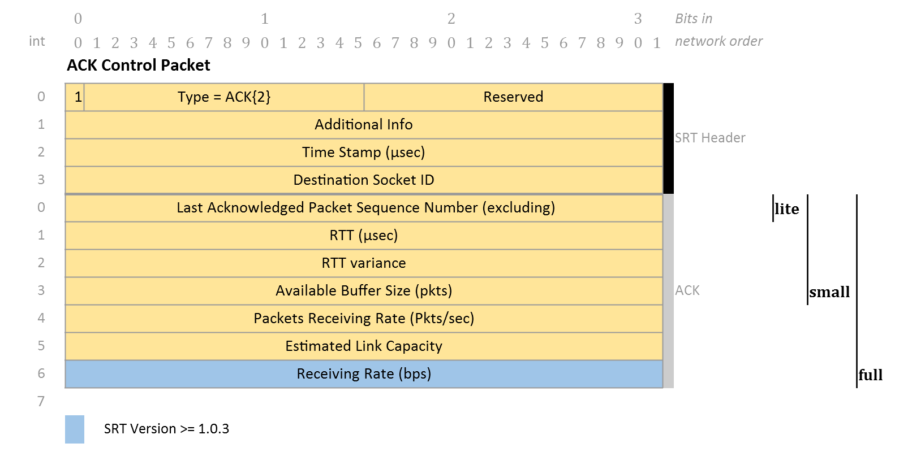

Control Events and Timers
Timers
-
LastRSP time is updated when SRT socket is created, when a connection is established (since SRT v1.3.3, PR #745), upon receiving a control or data packet.
-
LastRspAck time is updated when SRT socket is created, when a connection is established (since SRT v1.3.3, PR #745), an ACK packet for yet unacknowledged packet is received, and also if the sender's buffer has no unacknowledged packets on the new data submitted by srt_sendmsg().
-
LastSND timer is updated when SRT socket is created, when a connection is established (since SRT v1.3.3, PR #745), when a control or data packet is sent. A special update happens when a handshake message is sent in response to incomming handshare packet (this does not happen via sendCtrl()). The value is used to trigger sending a KEEPALIVE message. See Sec. Keepalive Messages.
-
NextACK time.
-
NextNAK time.
-
TargetSND time (TargetTime - rename in source code?) is used in the sender only for rate-based packet sending. In UDT draft referred to as SND timer.
Events
SRT has different events: ACK, NAK, EXP, SND and RSP. Each event has its own period and they are all independent. They use the system time as origins and should process wrapping if the system time wraps.
For a certain periodical event E in SRT, suppose the time variable is ET and its period is p. If E is set or reset at system time t0 (ET = t0), then at any time t1, (t1 - ET >= p) is the condition to check if E should be triggered.
-
ACK is used to trigger an acknowledgment (ACK). Its period is set by the congestion control module, otherwise the default value of 10 ms is used (COMM_SYN_INTERVAL or SYN time). However, SRT will send an ACK no longer than every 0.01 second, even though the congestion control does not need timer-based ACK. Here, 0.01 second is defined as the SYN time, or synchronization time, and it affects many of the other timers used in SRT.
-
NAK is used to trigger a negative acknowledgment (NAK). Its period is dynamically updated to RTT + 4 × RTTVar + SYN, where RTTVar is the variance of RTT samples.
-
EXP is used to trigger data packets retransmission and maintain connection status. Its period is dynamically updated to N × (RTT + 4 × RTTVar + SYN), where N is the number of continuous timeouts. To avoid unnecessary timeout, a minimum threshold (e.g., 0.5 second) should be used in the implementation.
UDT: 4 × RTT + RTTVar
Note that 4 × RTT + RTTVar + SYN is described in the UDT draft (Timers section). However, the formula actually used in the UDT v4 source code is RTT + 4 × RTTVar + SYN, which is also used in the SRT (as of v1.3.2). UDT v3 just uses 1 sec timeout.
In the rest of this document, a name of a time variable will be used to represent the associated event, the variable itself, or the value of its period, depending on the context. For example, ACK can mean either the ACK event or the value of ACK period.
Connection Expiration
Default 5 seconds. Can be configured by SRTO_PEERIDLETIMEO.
TODO: Add details
Describe in more details, as it relies on several timers.
EXP Event Processing (Currently just copied from UDT draft).
- Put all the unacknowledged packets into the sender's loss list.
- If (ExpCount > 16) and at least 3 seconds has elapsed since that last time when ExpCount is reset to 1, or, 3 minutes has elapsed, close the UDT connection and exit.
- If the sender's loss list is empty, send a keep-alive packet to the peer side.
- Increase ExpCount by 1.
Acknowledgement Messages
There are several types of ACK packets: lite ACK, small ACK and full ACK.

The default ACK interval ACKInt is 10 ms (CUDT::m_ullACKInt_tk). The Congestion Control module can specify a custom ACK interval by overriding the SrtCongestionControlBase::ACKIntervalMicrosec().
Neither LiveCC, nor FileCC specify this value.
NextACK time is set to tcur + ACKInt at the start when SRT socket is created and updated when a connection is established (since SRT v1.3.3, PR #745).
The value is updated on every ACK packet sent as NextACK = tcur + ACKInt,where ACKInt = CC::ACKIntµs ? CC::ACKIntµs : CUDT::ACKInt.
ACK packet is sent if tcur > NextACK or if Pktsrcvd >= CC::ACKIntpkts, where CC::ACKIntpktsis specified by the Congestion Control. Neither LiveCC, nor FileCC specify this value.
Congestion control can also schedule sending the ACK by setting NextACK = tcur if CC::needsQuickACK() returns true. By default LiveCC returns false, and FileCC returns true if the payload size is less than the maximum size (end of file detection).
A lite ACK is sent if Pktsrcvd >= 64 (CC::SELF_CLOCK_INTERVAL).
A full ACK is sent if tcur ACKLast > ACKInt. Otherwise a small ACK is sent.
ACK for the same sequence may be sent again if tcur - ACKLast >= RTT + 4 × RTTVar (see CUDT::sendCtrl()).
Keepalive Messages
Keepalive messages in SRT are sent based on the LAST_SND timer. LAST_SND timer is updated by the latest control or data packet sent. A KEEPALIVE message is sent if t >= LAST_SND + KEEPALIVE_PERIOD, where KEEPALIVE_PERIOD = 1 sec.
Keepalive messages in UDT are sent based on the EXP timer. EXP event is triggered at t >= N × (RTT + 4 × RTTVar + SYN), where N is the number of continuous timeouts. If N >= 16, the connection is closed. Otherwise if the senders buffer has unacknowledged packets, they are considered lost, added to the lost list, thus scheduled for retransmission. If the sender's buffer has no unacknowledged packets, a KEEPALIVE control packet is sent.It can be calculated, that for an idle connection a KEEPALIVE is sent every RTT + 4 × RTTVar + SYN.
NAK Reports Sent by Receiver
A negative acknowledgment (NAK) report is special SRT control packet, sent by the receiver back to the sender. The packet holds compressed sequence numbers of packets considered lost by the receiver.
There are two possibilities for the receiver to report a loss back to the sender.
Triggered by Loss Detection
Loss detection is based on Gaps in Sequence Numbers. Detection of a packet loss is triggered with the newly received packet.
An offset between the newly arrived packet and the last acknowledged position is calculated. In case the offset is negative, the packet is considered belated, meaning that it was either already acknowledged or dropped by TSBPD as too late to be delivered. Such belated packets are ignored.
Documentation states the retransmitted packet is not considered belated
Check statistics handling any packets after receiver ACK as belated, regardless of the retransmit flag. Should the re-transmitted packets be ignored?
An offset between sequence numbers of the arrived packet and the previously received packet is calculated. If the packet is not the next packet in order, then a loss detection mechanism is triggered.
First, a gap in sequence numbers of the consecutively received packets might be due to packet reordering. Sequence numbers that should fill the gap are added to the RcvLossList of a socket.
Then there is a decision whether a loss report should be sent. A non-zero reorder tolerance (ReorderTolerance <= MaxReorderTolerance) determines if a gap in sequence numbers is allowed. The default value of MaxReorderTolerance is zero, and it can be set with SRTO_LOSSMAXTTL socket option.
If ReorderTolerance==0, a loss report is sent immediately for the detected gap.
Otherwise, if ReorderTolerance>0, then the detected gap is added to a temporal loss list, with a TTL value equal to current ReorderTolerance value. Each time a DATA packet is received, TTTL of every lost packet in this temporal loss list is decremented by 1. Those packets
- TODO: Describe ReorderTolerance update logic
Example from SRT Periodic NAK Reports showing how a serial loss will be treated.
Packets in Transit | Receive Buffer
|
| Largest sequence number received (4)
| New /
+---+ +---+ | +---+ +---+---+---+---+---+---+
--- | 9 | --- | 8 | ---> | --->| 7 | + | _ | _ | 4 | 3 | _ | 1 | --->
+---+ +---+ | +---+ | +---+---+---+---+---+---+
| | \_____/ \_/
+---+ | +---+ | \____________/
<--- |NAK| <--- | <---|NAK|-+ Missing packets
| 2 | | |5,6|
+---+ | +---+
Triggered by Periodic NAK Reports
See also SRT Periodic NAK Reports.
By default periodic NAK reports are enabled in live mode (SRTO_TRANSTYPE = SRTT_LIVE), and disabled in file mode (SRTO_TRANSTYPE = SRTT_FILE). The functionality is controlled by SRTO_NAKREPORT socket option.
NAKtime is the time to send the next periodic NAK report. When t >= NAKtime and the RcvLossList is not empty, a periodic NAK report is sent. This report includes all the packets in the receiver's loss list (RcvLossList).
| Receive Buffer
|
| Largest sequence number received (7)
| /
| +---+---+---+---+---+---+---+
| --->| 7 | _ | _ | 4 | 3 | _ | 1 | --->
| +---+---+---+---+---+---+---+
| | \_____/ \_/
| +-----+ | \____________/
| <-| NAK |-+ Missing packets
| |2,5,6|
| +-----+
NAKtime is first initialized when a socket is created, and updated after a connection is established (since SRT v1.3.3, PR #745). Regularly NAKtime is updated with the last time a periodic NAK report was sent: NAKtime = t + NAKInt.
- ISSUE #701. NAK time is updated after sending the periodic NAK report. Should be also updated after sending a regular LOSS report? Or at least update the time if there are no losses in the *RcvLossList*.
where NAKInt is an interval between periodic NAK reports. Minimum NAK interval is NAKIntmin=300 ms, and it is set at the very beginning of the streaming.
NAK interval NAKInt is updated after sending a loss report. The new value is NAKInt = RTT + 4 × RTTVar. This value is passed to the CC module.
- FileCC can update NAKInt based on the reported receiving speed Rrcv (packets per second) and the length of the loss list LOSSlen: NAKInt = RTT + 4 × RTTVar + LOSSlen × 106 / Rrcv.
- LiveCC will update NAKInt by dividing it by 2: LOSSlen: NAKInt = (RTT + 4 × RTTVar) / 2.
The minimum value is NAKInt = max(NAKInt, NAKIntmin).
NAKtime is a time to send the next periodic NAK report. The time is initialized at CUDT::open() and after a connection is established (PR #745).
NAKtime is updated with the last time a periodic NAK report was sent.
- ISSUE #701. NAK time is updated after sending the periodic NAK report. Should be also updated after sending a regular LOSS report?
When t >= NAKtime and the RcvLossList is not empty, a periodic NAK report is sent. This report includes all the packets in the receiver's loss list (RcvLossList).
Packet Retransmission (Sender)
Retransmission Triggered by NAK Report
A packet is scheduled for retransmission if a sender receives a NAK report from the receiver. A loss report may be triggered either by loss detection, or by periodic NAK reports (see NAK Reports section above).
Blind Retransmission
A blind retransmission is an heuristic mechanism of a sender to trigger packet retransmission without receiving a NAK report from the receiver.
Fast Retransmission (FASTREXMIT)
FASTREXMIT mode is enabled by LiveCC when the receiver is not expected to send periodic NAK reports. A condition is triggered based on the LastRspAck time.
Timer-triggered condition: t > N × (RTT + 4 × RTTVar + 2 × SYN) + SYN, where SYN=10 ms, and N is a number of such retransmissions since last ACK (also reset if the sender's buffer has no unacknowledged packets on the new data submitted by srt_sendmsg).
All unacknowledged packets in the sender's buffer are added to the SndLossList and scheduled for retransmission.
FASTREXMIT is not present in UDT.
Late Retransmission (LATEREXMIT)
TODO: User-defined RTT
Describe a scenario with a user-defined RTO value.
The LATEREXMIT is the default blind retransmission mode of UDT. LATEREXMIT is triggered by the EXP timer.
EXP timer in UDT is used to trigger data packets retransmission and maintain connection status. Its period is dynamically updated to N × (RTT + 4 × RTTVar + SYN), where N is the number of continuous timeouts. To avoid unnecessary timeout, a minimum threshold (e.g., 0.5 second) is used in the implementation.
Each time EXP timer is triggered, resend unacknowledged packets currently in the sender's buffer if there are some, otherwise send a KEEPALIVE message.
In SRT v1.3.2 and earlier the logic is the same, except that a KEEPALIVE message has its own timer and a timeout of 1 second (see keepalive section above).
- TODO: Check if excessive KEEPALIVE messages are sent after a retransmission is scheduled.